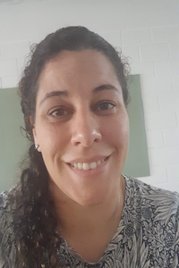

Carla Centurion | WDD 130
Hello! My name is Carla Centurion. I'm from Buenos Aires, Argentina. A little bit about myself...
... ....
. ...
I'm a mother of two teenagers. One of them started seminary this year so we are getting up early everyday. On the weekends they both play instruments so they have orquesta practice.
I'm an English teacher! I teach high school students. I love to see my students learn and progress.
I enjoy reading and watching movies and series. I like to watch the same movie several times and pay attention to diferent points of view or different characters or settings.
I love playing sports. Specially soccer and handball. I also like to play games
On my free time I like to spend time with my family. We love to travel but sometimes is hard to find time and money.
My favorite place to visit is Cordoba. --Cordoba is a Province in Argentina. The landscape is beautiful. you can see mountains, rivers, lakes, waterfall and much more. The weather is dry, which is perfect if you live in a place like Buenos Aires that is very humid.
I serve as stake primary secretary. I prefer teaching callings but I serve where the lord sends me.